css display et position
- page du site vers le CSS
- page du site vers le CSS display et position
- pratique du css: TP
Display
display : block, inline, inline-block, none
Une difficulté que l’on a souvent lorsque l’on apprend le CSS, c’est de faire la différence entre les propriétés display et position.
Chaque navigateur possède une feuille de styles (c’est-à-dire un fichier CSS) qui sera appliquée par défaut pour les différents éléments dont nous ne précisons pas le comportement dans nos propres feuilles de style.
La plupart des navigateurs suivent les recommandations du W3C (l’organisme en charge de l’évolution et des standards des langages Web). Ce W3C spécifie pour chaque élément HTML quelle devrait être la valeur de son display parmi :
-
display : block: affichage sous forme d’un bloc ; -
display : inline: affichage en ligne ; -
display : inline-block: permet aux éléments inline de suivre des règles de mise en forme ressemblant au block. Pour permettre par exemple à un élément inline d’avoir des marges ou des paddings. C’est la valeur par defaut de l’élémentinput. C’est pour cela que l’utilisation de cet élément est aussi simple : il reste à côté de son label, et on peut en changer sa largeur, sa hauteur, ses marges, etc.. -
display : none: l’élément n’est pas affiché.
Eléments de niveau block
Exemples d’éléments block : p, div, form, header, nav, ul, li, et h1.
Un élément block a les caractéristiques suivantes :
- Si aucune largeur n’est définie, il prendra toute la largeur de son élément parent.
- Il peut avoir des marges et des paddings.
- Si aucune hauteur n’est définie, il prendra la hauteur de ses éléments enfants (en supposant qu’il n’y a pas de “float” ou de positionnement sur des éléments environnants).
- Il ignore la propriété vertical-align.
Il est donc inutile pour un élément block de définir une largeur ou de lui donner une width: 100%
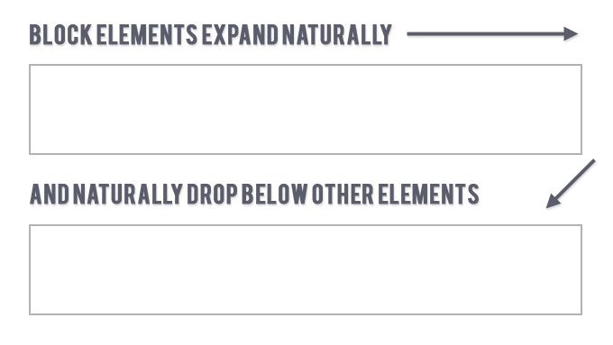
display : block
Exemple utilisant le display block
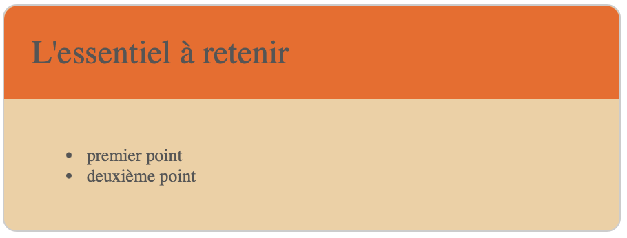
éléments de display block
div, p, ul, li s’empilent grâce à leur display block, valeur par defaut.
Voici le code HTML et CSS utilisé :
Remarque :
Pour mettre côte à côte des éléments de display block, il faudra utiliser la règle display:inline et eventuellement float (voir plus loin).
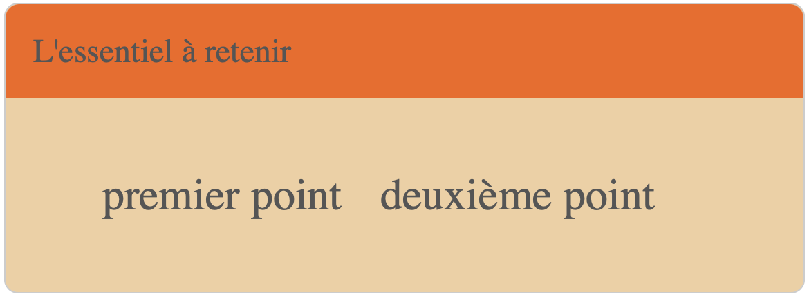
disposition des éléments de liste en inline
Éléments de niveau Inline
Exemples d’éléments inline : a, span
Un élément inline s’inscrit dans le flux de texte. On peut l’imaginer comme une boîte qui se comporte comme du texte.
Il ignore le propriétés width et height, mais accepte vertical-align
Il s’inscrit dans le flux du texte.
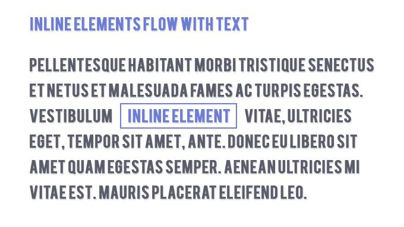
display : inline
inline : application à la barre de menu horizontale
Cette barre de menu est conçue avec des éléments de type a, mis dans des éléments de type li. La valeur par défaut d’un <li> pour la propriété display est list-item. Cette valeur est connue pour ses styles par défaut (margin-start plus ou moins élevée, puce de liste de type disc, saut de ligne, etc.).
La valeur par défaut du display de li est ressemblant à celui de block ce qui va rendre impossible le placement de tous nos liens sur une seule ligne. On va donc le modifier en inline
Le display de a va être conservé en inline.
On pourra alors ajouter des règles CSS aux éléments a directement enfants de li avec le selecteur li a. (pour définir une couleur de fond, une bordure…, ou pour des effets de survol, avec la pseudo classe a:hover)
Eléments de niveau inline-block
Avec Inline-block, l’élément génère une boîte block qui est mise en forme comme s’il s’agissait d’une boîte inline (c’est à dire sur la même ligne que le contenu adjacent). Cela offre la possibilité de définir une largeur et une hauteur, des marges et paddings top et bottom, etc.
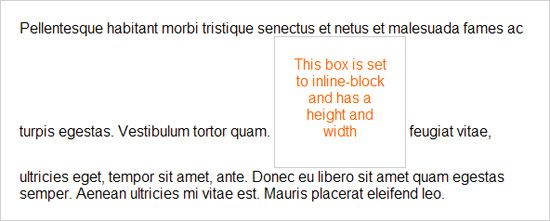
display : inline-block
application aux formulaires
Dans un formulaire, les éléments label et input se succèdent : un label précede un input afin d’expliciter la nature du champ input à remplir.
On montre ici un exemple de mise en page selon le display choisi pour le label. Le display par défaut du label a la valeur inline. On modifiera celui-ci par block puis inline-block;
Le code HTML sera identique dans les 3 cas ci-dessous :
- display
inline(display par defaut) : Ici, la règle csswidth:100pxque l’on souhaite associer à l’élémentlabelest inopérante. Les labels se mettent à côté de l’élément input, mais ces derniers ne s’alignent pas car la boite contenant l’élément label n’a pas une largeur fixe :
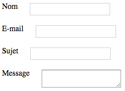
label avec display : inline
- display
block: Les éléments se positionnent l’un sous l’autre :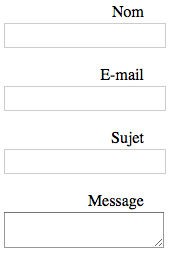
label avec display : block
- display
inline-block: c’est le résultat attendu : l’étiquette label se met côte à côte avec l’élément input. Ceux-ci sont alignés verticalement, et la règle csswidth:100pxassociée au label est opérante. Ce qui aligne alors les éléments input :
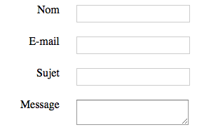
label avec display : inline-block
inline-block : application au design responsive
design responsive : mise en page qui s’adapte à la taille de l’écran. Souvent, lorsque la page s’affiche dans un écran d’ordinateur, les éléments se mettent côte à côte pour profiter de la largeur de cet écran. Par contre, lorsque l’écran est plus étroit (tablette ou smartphone), il est d’usage de disposer les éléments l’un sous l’autre.
Dans cet exemple, on va positionner des éléments en 3 colonnes.
On a vu que les élements de type div ont un display par défaut qui vaut block. Leur disposition naturelle est donc : l’un sous l’autre (mode écran pour smartphone).
Si on veut que l’affichage s’adapte à un écran large, on va alors modifier le display des éléments div en une nouvelle valeur inline-block.
La propriété float : Une fois le comportement des éléments modifié avec la valeur inline-block, on souhaitera définir l’élément div qui se positionnera à gauche, celui qui se positionnera au centre, et celui qui se positionnera à droite.
Avec la propriété float, un élément va se positionner par rapport à son élément voisin : il va s’empiler sur le bord (droite) de l’élément à gauche (float:left;), ou bien sur le bord de l’élément à droite (float:right;).
Méthode : pour placer les éléments côte à côte
- chaque élément div : display: inline-block;
- floater à gauche : float: left; ou floater à droite : float: right;
L’élément <div class="demoMain"> pour lequel la proriété float n’a pas été modifiée, se positionnera au centre.
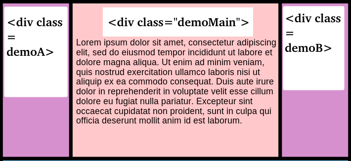
display : inline-block
Le code complet est donné en bas de document, avec l’exemple du Holy Grail
inline-block : centrer un élément fils dans son élément parent
-
L’élement parent,
conteneurdoit avoir la propriététext-align: center;afin de centrer horizontalement l’élément filsbloc. -
Pour l’élément fils,
bloc: centrer celui-ci avec les règles :display: inline-block;, etvertical-align: center;
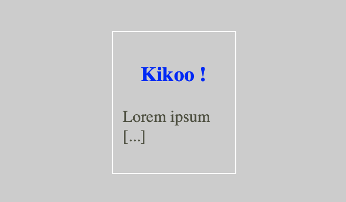
Display: flex
Noter qu’il est possible d’utiliser la règle display:flex. Ce qui a egalement pour rôle de modifier le flux de l’affichage des éléments fils. Cette technique, plus simple, sera traitée en TP: positionnement des objets.
Un exemple de positionnement avec éléments placés côte à côte:

page complète avec bandeau de navigation, utilisant display:flex
Noter que la règle display:flex peut aussi faciliter le centrage d’un élément par rapport à son parent. Le script CSS ci-dessous montre la simplicité de la méthode, comparée à celle utilisant le display: inline-block vue plus haut:
Cette propriété va placer l’élément fils centré par rapport au parent, sans que celle-ci soit héritée, ce qui présente un gros avantage (il n’est plus necessaire de rétablir l’alignement gauche par defaut du fils).
Position
la propriete position determine de quelle manière les éléments se disposent dans une page les uns par rapport aux autres. Voir le tutoriel à l’adresse :
https://developer.mozilla.org/fr/docs/Web/CSS/position
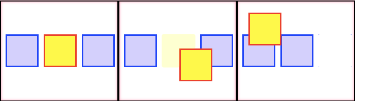
valeur de position : static (à gauche), relative (centre), absolute (à droite)
Par defaut, la valeur est static . Les propriétés top, right, bottom, left, et z-index n’ont aucun effet lorsque le positionnement est static.
-
RELATIVE —L’élément est positionné dans le flux normal du document puis décalé, par rapport à lui-même, selon les valeurs fournies par top, right, bottom et left. Le décalage n’a pas d’impact sur la position des autres éléments. Aussi, l’espace fourni à l’élément sur la page est le même que celui fourni avec static. Par defaut, right, bottom et left ont pour valeur auto
-
ABSOLUTE-L’élément est retiré du flux normal et aucun espace n’est créé pour l’élément sur la page. Il est ensuite positionné par rapport à son élément parent. C’est la valeur choisie pour les objets que l’on veut placer à l’aide de leurs coordonnées : voir les exemples dans les pages javascript avancé
-
FIXED — ressemble à
absolutemais le positionnement se fait relativement à la fenêtre du navigateur. Il reste fixe malgré le scrolling de la page.
Eléments en 3 colonnes : le Holy Grail
Pour des explications détaillés, on pourra se référer à la page consacrée sur alsacreation
Le Holy Grail se réfère à une page web qui est constituée de quatre sections — un header, un footer, et une zone principale comportant deux sidebars, un de chaque côté :
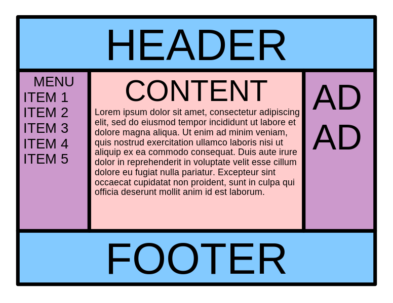
mise en page en 3 colonnes
- Elle comporte une colonne centrale de largeur fluide et des sidebars de largeur fixe.
- La colonne centrale doit apparaître en premier dans le markup, avant les deux sidebars mais après le header.
- Les trois colonnes doivent avoir la même hauteur, indépendamment de leur contenu.
- Le footer doit toujours se trouver en bas du viewport, même si le contenu ne remplit pas la hauteur du viewport.
- Le layout doit être responsif, toutes les sections doivent se retrouver sur une seule colonne sur les viewports de dimension réduite.
Le Saint Graal est bien connu pour être difficile à créer en CSS sans aucun tripatouillage.
Exemple de code html, css respectant la mise en page du saint graal, et de manière responsive (avec adaptation à la largeur des écrans, même de type smartphone).
Exemple : Vous pourrez voir ici l’effet responsive en réduisant ou augmentant la largeur de la fenêtre.
Liens
-
Cours html css, apprendre à coder: pierre-giraud.com
-
Best practices: optimiser le chargement des pages: github.com/cnumr/best-practices
-
Tutos, tester et jouer avec flexbox: believemy.com